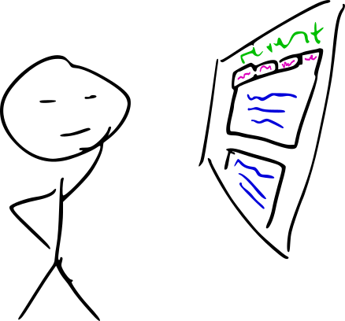
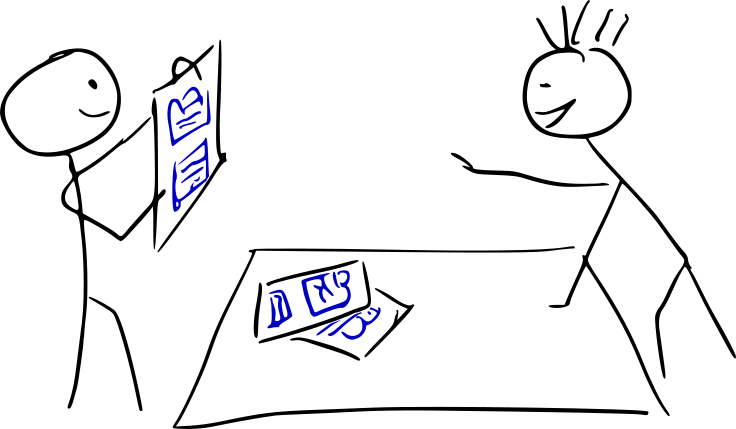
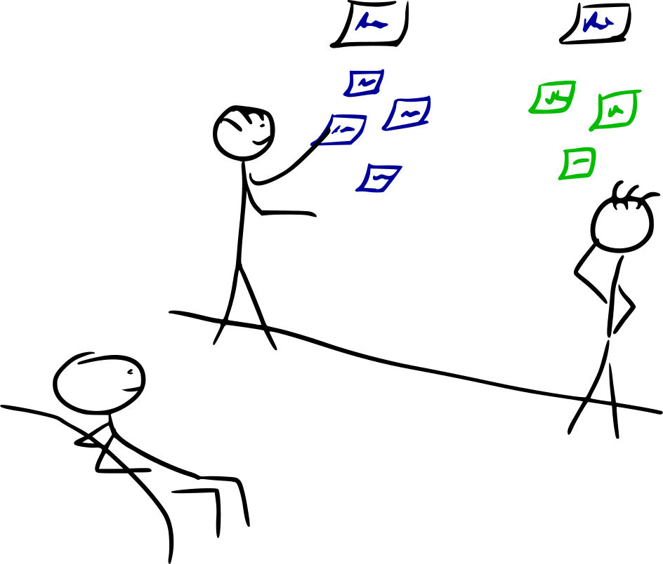
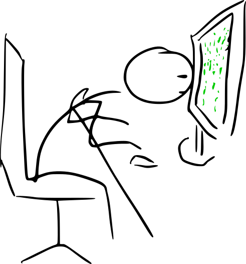

hoi
Alle diensten op een rijtje

Expert Review
U heeft een product of prototype en heeft behoefte om snel te weten te komen hoe het zit met het gebruiksgemak en de gebruikservaring ervan. Denk aan de navigatie van uw website, of de overzichtelijkheid van uw app. Ik voer een analyse op uw product uit, waarbij ik mij verplaats in uw doelgroep en de laatste usability inzichten in acht houdt.Wat heb ik er aan?
In korte tijd ontvangt u een rapport met goede punten en verbeterpunten aan uw product op het gebied van gebruiksvriendelijkheid. Daarbij wordt per verbeterpunt concreet oplossingsgericht advies gegeven, waarmee u uw product gemakkelijk gebruiksvriendelijker kunt maken.A/B testen
Help! Moet die knop rood of groen? Moet hij in het midden staan of links uitgelijnd? Soms is het erg lastig dit soort keuzes te maken. En terecht: de plaatsing of kleur van een enkel element op uw site of app kan een enorm verschil maken in de verkoopcijfers of het aantal mensen die zich inschrijven op een nieuwsbrief. Zie hier een voorbeeld van 12 verrassende A/B-test resultaten (opent in een nieuwe tab).Wat is A/B testen?
A/B-testen is bij uitstek de methode om de conversie van uw website of app te optimaliseren. De conversie is het omzetten van bezoekers naar klanten. En daarmee bedoel ik klanten in de brede zin: de bezoeker gaat over tot een actie die u wilt dat hij uitvoert, zoals iets kopen, inschrijven, aanmelden, iets downloaden, etc. Kortom elke actie die een stap verder gaat dan alleen surfen. Met een A/B-test wordt getest welke van twee varianten van dezelfde pagina het best presteert. De A variant heeft bijvoorbeeld een rode 'Inschrijven' knop, bij variant B is die groen. Al uw website bezoekers worden op de achtergrond automatisch verdeeld over de twee varianten. Tegelijkertijd wordt de conversion rate gemeten: hoeveel procent van de pagina-bezoekers klikt op de knop? Nu kunt u een juiste en gefundeerde keuze maken. In een iteratief proces waarbij opeenvolgend kleine aanpassingen worden getest kunt u op deze manier de conversion rate aanzienlijk verhogen.Maar welke varianten testen we dan?
Links, rechts of midden? Groen, rood, geel of blauw? En als blijkt dat die groene knop een hogere conversie heeft, hoe dan verder? Daar help ik u graag bij. Allereest zal ik mijzelf verplaatsen in een gebruiker uit uw doelgroep en werp ik een kritische blik op uw website. Daarnaast zal ik naar uw website statistieken kijken: waar haken bezoekers af, hoe navigeren zij door uw site? Met al deze inzichten stel ik hypotheses over welke kleine aanpassingen een groot verschil kunnen maken. Natuurlijk hoeft u mij niet te geloven: we testen die hypotheses met A/B-testen, zodat u wordt overtuigd door de cijfers.Observatieonderzoek
U heeft een werkend prototype van bijvoorbeeld een website, of een bestaande website die toe is aan vernieuwing. Met behulp van observatieonderzoek beantwoordt Umanise o.a. de volgende vragen:- Welke aspecten van uw product zijn goed en moeten er vooral in blijven?
- Tegen welke problemen lopen gebruikers aan bij het gebruik van uw product?
- Hoe moet dat verbeterd worden?
Hoe dan?
Door een kleine groep gebruikers uit uw doelgroep te observeren tijdens het gebruik van uw product kunnen we goed zien welke aspecten goed werken en welke niet. Elke onderzoeksdeelnemer wordt achteraf geïnterviewd. Hierin wordt ingegegaan op dingen die zijn opgevallen in de interactie. Ook wordt uw doelgroep hier gevraagd hoe zij denken dat het beter kan. Alles wordt gefilmd, zodat de sessie uitgebreid geanalyseerd kan worden. Daarnaast geeft het altijd fantastisch illustratief beeldmateriaal, waardoor u wordt overtuigd door de acties van uw gebruikers. Uiteraard ontvangt u een concreet, oplossingsgericht adviesrapport, waardoor het verbeteren van uw product een eitje wordt.
Paper prototyping
Heeft u nog geen werkend prototype of bestaand product, maar wilt u wel weten of uw ideeën een duidelijke navigatiestructuur bieden voor uw doelgroep? Dan kan paper prototyping de oplossing bieden. Met behulp van paper prototyping is het mogelijk om al in het beginstadium van de ontwikkeling van bijvoorbeeld een website of applicatie het functioneel design te testen bij de gebruikers.Hoe dan?
We beginnen met uw idee van de designs van elke pagina te schetsen. Dit hoeft helemaal niet mooi en keurig, gewoon zwart-wit, gewoon met één pen is voldoende. Juist doordat het er zo onaf uitziet, als een product in ontwikkeling, durven gebruikers kritiek te uiten en kom je tot verbeterpunten. Elke pagina wordt uitgeknipt, zodat ze mooi op elkaar gelegd kunnen worden. Vervolgens wordt gebruikers uit uw doelgroep gevraagd bepaalde informatie te vinden of een taak uit te voeren. Elke keer dat een gebruiker ergens op klikt wordt het juiste papiertje vooraan gelegd. De sessie wordt structureel geobserveerd en opgenomen. Achteraf wordt de onderzoeksdeelnemer geïnterviewd. Naast het testen van de hoofdnavigatie van uw product krijgt u zo ook ideeën uit uw doelgroep over hoe zij uw product graag zouden zien.Enquêtes
- Welke informatie vinden de gebruikers van mijn website belangrijk?
- Welk ontwerp van de homepagina vindt mijn doelgroep het mooist?
- Welk cijfer geeft mijn doelgroep aan het gebruiksgemak?
- Hoe tevreden is mijn doelgroep over het administratiesysteem?
Interviews
Met interviews kunnen we dieper ingaan op de behoeften van gebruikers uit uw doelgroep.- Hoe wordt de navigatie ervaren?
- Wat werkt er niet goed aan?
- Hoe kan dat beter?
Focus groups
In een focusgroup discussiëren een aantal mensen mensen die iets met uw product te maken hebben. Dit zijn gebruikers, maar bijvoorbeeld ook experts uit relevante vakgebieden of uzelf. De discussie kan gaan over uw product, of een concept of een feature van uw product. Het blijft niet alleen bij een discussie, vaak wordt gebruik gemaakt van methoden om de creatieve energie te doen stromen. Dit is een goede kans voor het verkrijgen van diepgaande informatie en het genereren van creatieve oplossingen. Bovendien kunt u zo zelf in contact komen met uw doelgroep en een beter begrip krijgen van wat er bij hen leeft in relatie tot uw product. Umanise organiseert deze focusgroups met een goed voorbereid programma en een gespreksleider. Een dergelijke groepsdiscussie draait altijd uit op een erg leuke middag, waarbij een helder beeld wordt verkregen van de visie van uw doelgroep. Daarnaast levert het veel inspiratie op voor u en uw ontwerpers bij de ontwikkeling van uw product.
Card sorting
Waar verwacht uw doelgroep bepaalde informatie te vinden en wat vinden zij logische terminologie? Met card sorting krijgt u een veel beter beeld hoe informatie op uw site of app gegroepeerd moet worden en hoe de navigatie in elkaar moet zitten.Hoe dan?
Van tevoren worden kaartjes beschreven met stukjes content of functionaliteiten. Eén of meer deelnemers bekijken de kaartjes. Vervolgens groeperen zij ze op een manier dat het voor hen logisch lijkt. Achteraf bedenken de deelnemers groepsnamen voor die groepen. Je kan een dergelijke card sort sessie met meerdere groepen doen, parallel aan elkaar of kort op elkaar volgend. Op deze manier krijg je inzicht in:- logische informatie structuren vanuit het perspectief van uw gebruiker
- de verwachtingen van de gebruiker
- bruikbare terminologie volgens de gebruiker

Webapp ontwikkeling
Wilt u naar aanleiding van mijn adviezen ook direct een gebruiksvriendelijke webapp of website? Ook dat kan ik voor u doen. Op basis van uw eisen en mijn inzicht in usability en inlevingsvermogen in uw doelgroep bouw ik voor u een complete website. Daarbij maak ik gebuik van verschillende programeertalen - voornamelijk html, css, en javascript - die ik combineer om een snelle en responsive website te maken die goed te gebruiken is op elk beeldscherm. Natuurlijk kan dit ook in combinatie met één of meer van bovenstaande usability onderzoeken, zodat de website optimaal aansluit bij de wensen van uw doelgroep en het doel dat u beoogt te behalen met de site. Deze website is een goed voorbeeld, of de webapp die ik maakte voor de Rijksuniversiteit Groningen, zie mijn portfolio.Ook voor online demo's of prototypes kunt u bij mij terecht. In zulke demo's zijn functionaliteiten of adviezen gevisualiseerd en valt er met de belangrijkste functionaliteiten te interacteren. Dat kan handig zijn als u bijvoorbeeld een idee heeft voor een mooi product dat u professioneel wilt kunnen presenteren aan een derde partij, of als u een demonstratie wilt van hoe mijn adviezen over het verbeteren van gebruiksvriendelijkheid er in de praktijk uit gaan zien zodat het voor uw team gaat leven en makkelijk te interpreteren is. Hier een voorbeeld van een demo die ik maakte voor Vending@Work, zie mijn portfolio.